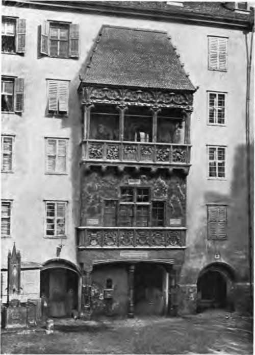

Limitations And Capabilities
Description
This section is from the book "Mural Painting", by F. Hamilton Jackson. Also available from Amazon: Mural Painting: -1904.
Limitations And Capabilities
The conventions which should govern wall-painting are founded partly on consideration of the position which the decoration is to occupy, partly on the material in which it is to be executed, and partly upon the subject chosen, which should be in harmony with the purpose to be served by the decorated building. Thus, an arrangement which is perfectly appropriate and satisfactory for an easel picture is generally quite out of place upon a wall, even if oil be the medium employed in rendering it; a scheme of coloration suitable to a ballroom would be out of place in a church, and the detail, or cleverness of manipulation, which may give value to a water-colour painting intended to be hung near the eye, is absolutely out of place and even harmful in a fresco or tempera painting upon a wall, which would naturally be viewed from a distance; and one may go farther and assert that the choice of forms and modes of arranging the objects which together form the composition must be regarded from quite different points of view, and that such matters as the treatment of light and shade and the sequence and opposition of the masses of colour must also have different and special consideration. The fine qualities of a wall-painting may often be transferred with advantage to works which are not designed for special places, but those qualities which are frequently considered to give special value to easel pictures are useless to the designer and executant of mural paintings, who must depend for his effects upon careful arrangement and balance of colour and the resulting tonality, not upon the successful rendering of aerial perspective; upon suavity of line and vigour or grace of silhouette, not upon the clever drawing or foreshortening of the figure; upon a defined and broad technique instead of dexterity of manipulation, and the suggestiveness of incompleteness. And it is a curious fact that although fresco was not the earliest mode of wall decoration used (at least in historic times) the conventions imposed by the employment of that medium, that is to say those ways of working which are demanded if the painter is to do his work successfully, and with a tolerable amount of comfort, are with one exception useful and helpful to the mural decorator who uses some other medium; that exception being the difference in the colour when wet and when the plaster has dried, which makes it difficult to match the work of one day in colour and tone with that of the day preceding. The sweeping outline which gives such dignity to groups is an advantage to the fresco painter, since it makes the cutting of the superfluous plaster when the day's work is finished easier, the simplicity of colour caused by the restricted palette gives a unity and breadth to the general effect, the necessity of finishing each portion while the plaster is still wet prevents the over-detailing of parts which would damage luminosity and darken instead of decorating the wall.
Another point which bears upon the general subject may here be mentioned, viz. the fact that all mural painting must be decorative or a failure, that is to say, that the painter must approach his subject from the point of view of realism only so far as is necessary to suggest his intention, but must consider every detail in its form and colour as part of the decoration with scrupulous care. To take an instance from a well-known work—the background of Puvis de Chavannes' "Girlhood of S. Genevieve," in the Pantheon at Paris, is a suggestive landscape, but its value in that composition lies in its beautiful colour and in the forms of hill and tree, and not in the least in the effect of nature which happens to be well rendered.
A French authority on fresco speaks thus: "An artist who would be great in the painting of mural pictures must not be allured from genuine art by the prejudices of the time in which he lives. A pretty style of decoration may minister to the caprice of a passing fashion, but it would ill accord with the nervous and masterly mode of fresco." Mr. *Armitage, b.a., when lecturing to the Academy students, also spoke with no uncertain voice on the qualities necessary for the successful production of large mural paintings. "The great mistake most artists make when they have a large wall-space to decorate with figures, is to proceed in the same way as they would for an easel picture. Elaborate finish, powerful light and shade, expression and individuality in the heads, are all excellent qualities in an easel picture, but they are by no means necessary in decorative work. On the other hand, a well-balanced and harmonious composition, a pure and grand style of drawing, and a great breadth and luminosity of colouring are absolutely essential for good decorative work. These are all qualities which are never got by dexterity of hand, dodges about colour, or chance, to which much of the fascination of oil painting on canvas must be attributed. They are only obtainable by patient and laborious work." " The decorative painter ought always to bear in mind that his work is supplementary to that of the architect. The very word 'decorative' implies subserviency to that which has to be decorated." I extract also a few of the hints on composition which he gave as being very useful to the student. "Beware of concave lines for the outlines of your groups. Avoid sharp angles, particularly right angles, unless you wish to draw especial attention to them. Be very careful about the relative position of the heads, so that, viewed as points of interest, they do not form any geometrical pattern. Convex lines are generally associated with forward movement and concave with retreat Right angles in a group of figures convey the idea of immovability. The lines and general grouping, as well as the arrangement of light and shade, should be arranged with a view to expressing the subject with dignity and grandeur. Accessory figures, however good in themselves, if they mar the general effect, must be sacrificed. The art of good grouping is not of spontaneous growth. Simplicity and grandeur are not always synonymous terms, as witness the street architecture of the Georgian period".
THE "GOLDENES DACHL," INNSBRUCK.
A portion of the Castle of Frederick of the Empty Pockets.
Continue to: